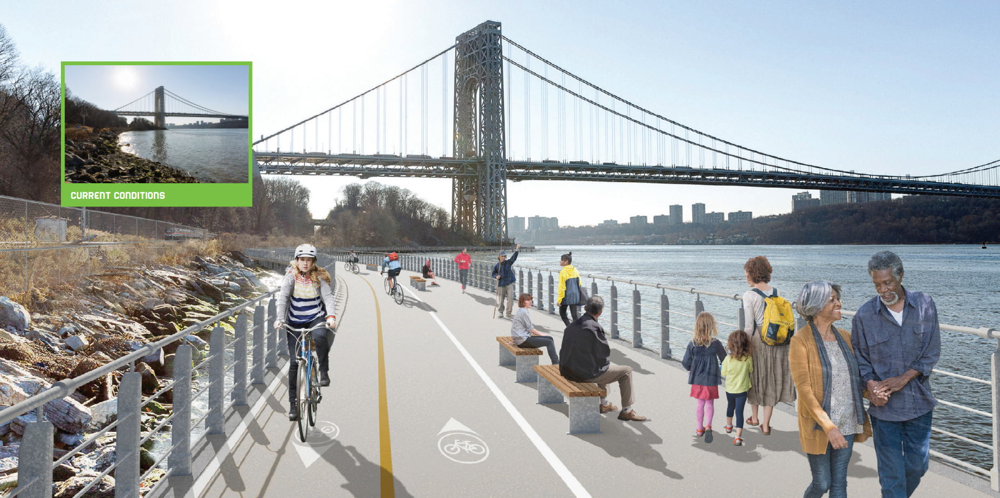
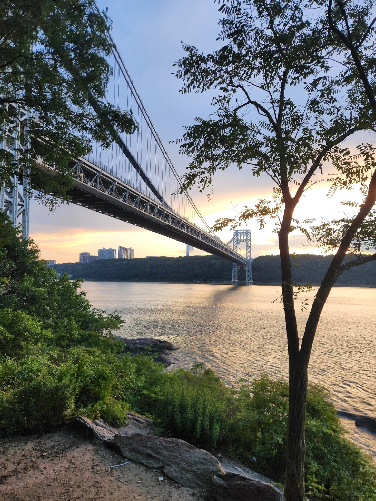

|
That stretch between the Little Red Lighthouse and Dyckman has problems. Many cyclists hate it. The bridge over the Amtrak tracks has been in need of repairs since 2009. And the path along the parkway is plagued with sinkholes.
NYC Parks has recently shared detailed plans to fix the bridge and make other improvements around that section of the greenway. But some advocates want a bigger overhaul. They call the proposal the Lighthouse Link: a pathway that would run along the water between Inwood and the Little Red Lighthouse, offering easier access to the lighthouse and opening up a big chunk of the waterfront to people in the neighborhood.
The Greenway to Nowhere
A key engine behind the Lighthouse Link proposal is Maggie Clarke. The 73-year-old is a particular kind of community activist: hyperknowledgeable about local issues, with a track record of getting things done in this intractable city. Among other accomplishments, she’s a founder of the RING Garden in Inwood.
Clarke also has a Ph.D. in earth and environmental sciences, and she argues that the sinkholes are likely to keep recurring. Patching them up, she said, “is just not a good long-term solution.”
Enter the Lighthouse Link. The idea has a history. In 2004, the city put out a big report on Manhattan’s waterfront greenways calling for the link to be built. The report said NYC Parks already had some funding and plans in place, and projected it would be done by 2005 or 2006.
That didn’t happen. A decade later, the city did invest $3.5 million on a path that stretches south from Dyckman Street toward the Little Red Lighthouse — and dead-ends after around a mile. Some people call it “the greenway to nowhere.”
Extending that path by a couple thousand feet would connect it to the lighthouse and complete the link.
A 2018 city plan explores the idea, and in 2022, hoping to take advantage of Biden-era infrastructure funds, Community Board 12 passed a resolution calling on the city to prioritize the project.
There hasn’t been much progress since then. An NYC Parks representative sent over a statement saying that the agency “recognizes the potential benefits of the proposed Lighthouse Link” and continues to explore options to implement it.

Conceptual rendering of Manhattan Waterfront Greenway from the city's 2018 plan. Image: City of New York.
The Plan
What would the Lighthouse Link actually look like? Because the train tracks come so close to the waterfront, there’s not much space for a path on land. But maybe there could be a path on the water.
One option would be a cantilevered structure that stretches out over the water.
Clarke has advocated for another option: a floating greenway, buoyed in the water by pontoons. She sent over a six-page Microsoft Word document laying out the scheme and arguing that it could be relatively inexpensive.
The idea has precedents. In Portland, Oregon, for example, there’s a 1200-foot-long floating walkway that runs parallel to one bank of the Willamette River. Landscape architect Jeramie Shane of the firm Mayer/Reed, who was involved in the project, said the walkway handles tidal fluctuations and seasonal changes in the water level. “It’s really stable,” he said.
The obstacles to putting this into place are considerable. NYC Parks has a lot of properties in need of repair, and limited capacity to take care of them all. Building anything over the water would also likely require a complex environmental permitting process.
Plus, any project would probably require cooperation from Amtrak. “Amtrak is one of the most difficult partners to work with,” said Sam Schwartz, a former chief engineer for the NYC Department of Transportation.
Jason Abrams, an Amtrak spokesperson, said the train operator hasn’t seen any formal plans for the Lighthouse Link. But, he wrote in an email, “Amtrak would be happy to work with the City and community groups to find a design solution that maintains the minimum safety requirements for train operations.”
The Advocates
A few local players are throwing new weight behind the idea. Emily Bachman, who oversees land use and planning for Manhattan Borough President Brad Hoylman-Sigal, said a forthcoming report will mention the link. “The concept is strong, and it just hasn’t been funded, and no one’s moving it forward to reality,” she said.
Is it a priority for her? "It's on the shortlist," she said.
The East Coast Greenway Alliance and Transportation Alternatives, two nonprofit groups, have also recently started pushing for the proposal. Anna Berlanga, an organizer for Transportation Alternatives, described the proposal as facing obstacles, but still doable. On issues like this, she said, “I think it only takes, honestly, three really dedicated people, or 10 semi-dedicated people, to make change.”

|